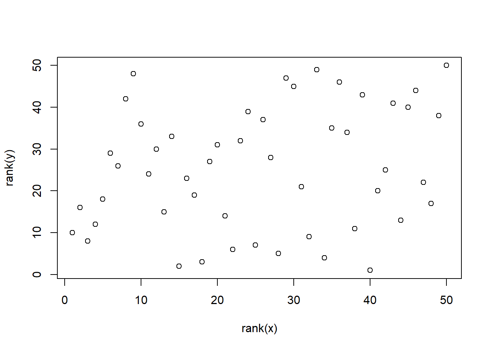
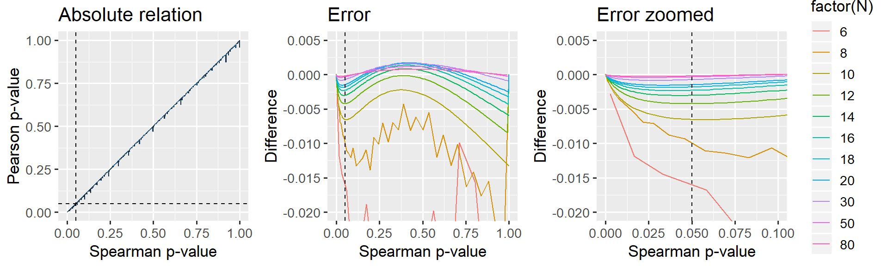

This document presents the close relationship between Spearman correlation and Pearson correlation. Namely, that Spearman correlation is just a Pearson correlation on \(rank\)ed \(x\) and \(y\). It is an appendix to the post “Common statistical tests as linear models”.
TL;DR: Below, I argue that this approximation is good enough when the sample size is 12 or greater and virtually perfect when the sample size is 20 or greater.
Here, I start by creating some mildly correlated data. Note that the distribution of the data does not matter since everything is ranked, so the results are identical for non-normal data.
data = MASS::mvrnorm(50, mu=c(2, 2), Sigma=cbind(c(1, 0.4), c(0.4, 1)))
x = data[,1]
y = data[,2]
plot(rank(y) ~ rank(x))
Now let’s test it# Three ways of running the same model
spearman = cor.test(x, y, method='spearman')
pearson = cor.test(rank(x), rank(y), method='pearson') # On ranks
linear = summary(lm(rank(y) ~ rank(x))) # Linear is identical to pearson; just showing.
# Present the results
print('coefficient rho is exactly identical:')
rbind(spearman=spearman$estimate,
ranked_pearson=pearson$estimate,
ranked_linear=linear$coefficients[2])
print('p is approximately identical:')
rbind(spearman=spearman$p.value,
ranked_pearson=pearson$p.value,
ranked_linear=linear$coefficients[8])## [1] "coefficient rho is exactly identical:"
## rho
## spearman 0.2319808
## ranked_pearson 0.2319808
## ranked_linear 0.2319808
## [1] "p is approximately identical:"
## [,1]
## spearman 0.1049734
## ranked_pearson 0.1050043
## ranked_linear 0.1050043The correlation coefficients are exact. And the p-values are quite close! But maybe we were just lucky? Let’s put it to the test:
The code below does the following:
library(tidyverse)
# Settings for data simulation
PERMUTATIONS = 1:200
Ns = c(seq(from=6, to=20, by=2), 30, 50, 80) # Sample sizes to model
rs = c(0, 0.5, 0.95) # Correlation coefficients to model
# Begin
D = expand.grid(set=PERMUTATIONS, r=rs, N=Ns) %>% # Combinations of N and r
mutate(
# Use the parameters to generate correlated data in each row
data = map2(N, r, function(N, r) MASS::mvrnorm(N, mu=c(0, 4), Sigma=cbind(c(1, r), c(r, 1)))),
# Tests
pearson_raw = map(data, ~cor.test(rank(.x[, 1]), rank(.x[, 2]), method='pearson')),
spearman_raw = map(data, ~cor.test(.x[, 1], .x[, 2], method = 'spearman')),
# Tidy it up
pearson = map(pearson_raw, broom::tidy),
spearman = map(spearman_raw, broom::tidy),
) %>%
# Get estimates "out" of the tidied results.
unnest(pearson, spearman, .sep='_') %>%
select(-data, -pearson_raw, -spearman_raw)
# If you want to do a permutation-based Spearman to better handle ties and
# overcome issues on how to compute p (computationally heavy).
# Corresponds very closely to R's spearman p-values
#mutate(p.perm = map(data, ~ coin::pvalue(coin::spearman_test(.x[,1] ~ .x[,2], distribution='approximate')))) %>%
#unnest(p.perm)
head(D)Just as we saw in the simple example above, correlation coefficients (estimate and estimate1) are identical per definition. We can see that by calculating the difference and see that it is always zero:
summary(D$estimate - D$estimate1)## Min. 1st Qu. Median Mean 3rd Qu. Max.
## Yup. The minimum difference is zero. The maximum is zero. All of them are identicalNo need to look further into that.
Before getting started on p-values, note that there are several ways of calculating them for Spearman correlations. This is the relevant section from the documentation of cor.test:
For Spearman’s test, p-values are computed using algorithm AS 89 for n < 1290 and exact = TRUE, otherwise via the asymptotic t approximation. Note that these are ‘exact’ for n < 10, and use an Edgeworth series approximation for larger sample sizes (the cutoff has been changed from the original paper).
You can get beyond all of that by doing permutation-based tests at the cost of computational power (see outcommented code above). However, there is almost virtually perfect correspondence, so I just rely on R’s more computationally efficient p-values.
Below, I plot the difference between Spearman-derived p-values and ranked-Pearson-derived p-values. I have chosen not to plot as a function or r in the name of simplicity because it makes no difference whatsoever, but feel free to try it out yourself.
library(patchwork)
# A straight-up comparison of the p-values
p_relative = ggplot(D, aes(x=spearman_p.value, y=pearson_p.value, color=N)) +
geom_line() +
geom_vline(xintercept=0.05, lty=2) +
geom_hline(yintercept=0.05, lty=2) +
labs(title='Absolute relation', x = 'Spearman p-value', y = 'Pearson p-value') +
#coord_cartesian(xlim=c(0, 0.10), ylim=c(0, 0.11)) +
theme_gray(13) +
guides(color=FALSE)
# Looking at the difference (error) between p-values
p_error_all = ggplot(D, aes(x=spearman_p.value, y=pearson_p.value-spearman_p.value, color=factor(N))) +
geom_line() +
geom_vline(xintercept=0.05, lty=2) +
labs(title='Error', x='Spearman p-value', y='Difference') +
coord_cartesian(ylim=c(-0.02, 0.005)) +
theme_gray(13) +
guides(color=FALSE)
# Same, but zoomed in around p=0.05
p_error_zoom = ggplot(D, aes(x=spearman_p.value, y=pearson_p.value-spearman_p.value, color=factor(N))) +
geom_line() +
geom_vline(xintercept=0.05, lty=2) +
labs(title='Error zoomed', x='Spearman p-value', y='Difference') +
coord_cartesian(ylim=c(-0.02, 0.005), xlim=c(0, 0.10)) +
theme_gray(13)
# Show it. Patchwork is your friend!
p_relative + p_error_all + p_error_zoom
Figure: The jagget lines in the leftmost two panels are due to R computing “exact” p-values for Spearman when N < 10. For samples larger than N>=10, an approximation is used which gives a smoother relationship.
It is clear that larger N gives a closer correspondence. For small p, the Pearson-derived p-values are lower than Spearman, i.e. more liberal. Importantly, when N=12, this effect is at most 0.5% in the “significance-region” which I deem acceptable enough for the present purposes. When N=20, the error is at most 0.2% for the whole curve and there is no difference when N=50 or N=100.
The correlation coefficients are identical.
The p-value is exact enough when N > 10 and virtualy perfect when N > 20. If you are doing correlation studies on sample sizes lower than this, you have larger inferential problems than those posed by the slight differences between Spearman and Pearson.